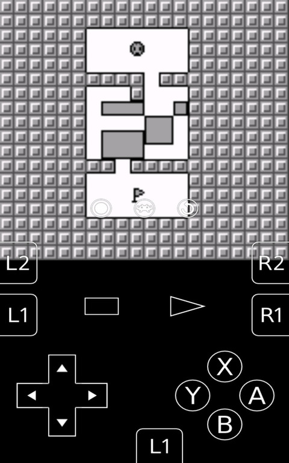
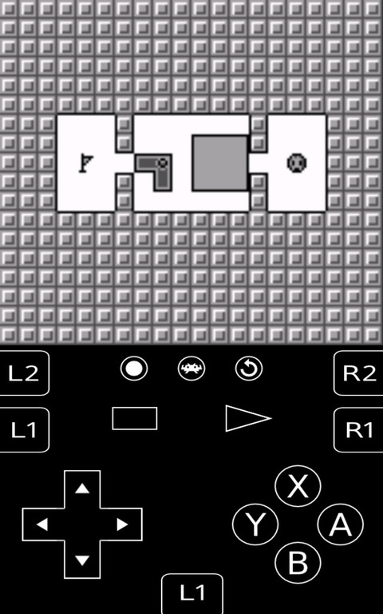

華為X2
修改RetroArch模擬器的OnScreen Gamepad位置
修改位置：
/data/data/com.retroarch/overlays/gamepads/flat/retropad.cfg
# Overlay 4 - portrait overlay4_descs = 30 overlay4_desc0 = "left,0.12037,0.83417,radial,0.07963,0.03854" overlay4_desc0_overlay = dpad-left.png overlay4_desc1 = "right,0.30926,0.83417,radial,0.07963,0.03854" overlay4_desc1_overlay = dpad-right.png overlay4_desc2 = "up,0.21481,0.78104,radial,0.06852,0.04479" overlay4_desc2_overlay = dpad-up.png overlay4_desc3 = "down,0.21481,0.88729,radial,0.06852,0.04479" overlay4_desc3_overlay = dpad-down.png overlay4_desc4 = "left|up,0.09259,0.78542,rect,0.05370,0.03021" overlay4_desc5 = "right|up,0.33704,0.78542,rect,0.05370,0.03021" overlay4_desc6 = "left|down,0.09259,0.92292,rect,0.05370,0.03021" overlay4_desc7 = "right|down,0.33704,0.92292,rect,0.05370,0.03021" overlay4_desc8 = "a,0.88889,0.83417,radial,0.07407,0.04167" overlay4_desc8_overlay = A.png overlay4_desc9 = "b,0.77778,0.89667,radial,0.07407,0.04167" overlay4_desc9_overlay = B.png overlay4_desc10 = "x,0.77778,0.77167,radial,0.07407,0.04167" overlay4_desc10_overlay = X.png overlay4_desc11 = "y,0.66667,0.83417,radial,0.07407,0.04167" overlay4_desc11_overlay = Y.png overlay4_desc12 = "start,0.64815,0.68146,rect,0.07037,0.02500" overlay4_desc12_overlay = start_psx.png overlay4_desc13 = "select,0.35185,0.68146,rect,0.07222,0.02396" overlay4_desc13_overlay = select_psx.png overlay4_desc14 = "l,0.04815,0.70021,rect,0.09259,0.04208" overlay4_desc14_overlay = L1.png overlay4_desc15 = "l,0.50185,0.97083,radial,0.09259,0.04208" overlay4_desc15_overlay = L1_down.png overlay4_desc16 = "l2,0.04815,0.60771,rect,0.09259,0.04208" overlay4_desc16_overlay = L2.png overlay4_desc17 = "r,0.95185,0.70021,rect,0.09259,0.04208" overlay4_desc17_overlay = R1.png overlay4_desc18 = "r2,0.95185,0.60771,rect,0.09259,0.04208" overlay4_desc18_overlay = R2.png overlay4_desc19 = "menu_toggle,0.50000,0.60000,radial,0.046296,0.02604" overlay4_desc19_overlay = rgui.png overlay4_desc20 = "overlay_next,0.65000,0.60000,radial,0.046296,0.02604" overlay4_desc20_overlay = rotate.png overlay4_desc20_next_target = "landscape" overlay4_desc21 = "overlay_next,0.35000,0.60000,radial,0.046296,0.02604" overlay4_desc21_overlay = analog.png overlay4_desc21_next_target = "portrait-analog"
修改前

修改後
